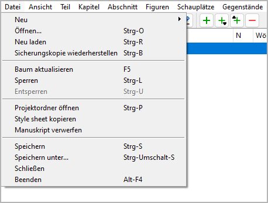
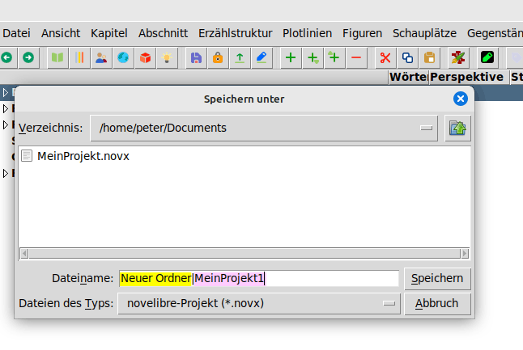
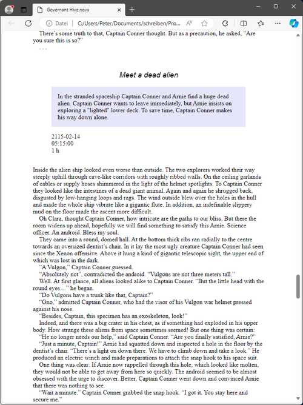

Datei-Menü
Datei-Operationen

Neu
Create a new novel project
Mit Datei > Neu können Sie create a new project. This will open a submenu.
Bemerkung
The submenu can be extended by plugins to add more file types from which a novelibre project can be created.

- Leeres Projekt
This will close the current project and create a blank project.
A file select dialog asks for the new project’s file name. If you cancel the dialog können Sie select the file name later when saving the project.
- Aus ODT erzeugen…
This will close the current project and open a file dialog asking for an ODT document to create the new projec from.
The newly created project is saved automatically in the same directory as the ODT document, using its file name and the extension .novx.
If a project with the same file name as the ODT document already exists, no new project will be created.
If you select a previously exported document belonging to an existing project, this project will be updated and loaded.
The ODT document can either be a work in progress, i.e. a regular novel Manuskript with chapter headings and section contents, r an outline containing the chapter and section structure with Titels and descriptions.
Öffnen…
Öffnen a novel project
Mit Datei > Öffnen or Strg-O
können Sie open an existing project file.
Bemerkung
When opening a project, the current project will be closed. If there are unsaved changes, you will be asked for saving.
Neu laden
Neu laden the novel project
Mit Datei > Neu laden or Strg-R
können Sie reload the project.
Tipp
This way können Sie undo changes made in the current session.
Bemerkung
If the project has changed on disk since last opened, you will get a warning.
Sicherungskopie wiederherstellen
Restore the latest backup file
Mit Datei > Sicherungskopie wiederherstellen or Strg-B
können Sie restore the latest backup file.
You will get a warning, because changes may be lost.
Hinweis
After restoring the backup, a backup copy is no longer available. You can create a new backup copy by saving the project.
Baum aktualisieren
Enforce tree refresh after making changes
Mit Datei > Baum aktualisieren or F5
können Sie refresh the tree.
„Normal“ sections that have been moved to an „Unbenutzt“ chapter are made „Unbenutzt“.
Teils and chapters are renumbered according to the Automatische Nummerierung settings.
The „Papierkorb“ chapter is moved to the end of the book, if necessary.
Sperren
Protect the project while edited outsides
Mit Datei > Sperren or Strg-L
können Sie lock the project.
Bemerkung
Alle changes must be saved before locking the project.
Entsperren
Make the project editable
Mit Datei > Entsperren or Strg-U
können Sie unlock the project.
Projektordner öffnen
Launch the file manager
Mit Datei > Projektordner öffnen or Ctrl-P
können Sie launch the file manager with the current project folder .
This might come in handy, if you wish to delete files,
open your project with another application, and so on.
Hinweis
In case you edit the project „outsides“, consider locking it before.
Style sheet kopieren
Provide a css style sheet in the project folder
Mit Datei > Style sheet kopieren können Sie copy the style sheet novx.css into the current project folder. This allows you to view the .novx project file with a web browser.

Edge browser Screenshot
Hinweis
Depending on your web browser and your operating system, the
content type resp. MIME type of .novx files must be registered as
„text/xml“. Under Windows, yo can do this by running the
<home>\.novx\add_novelibre.reg script.
Manuskript verwerfen
Verwerfen the current Manuskript by renaming it
Mit Datei > Manuskript verwerfen können Sie add the .bak extension to the current Manuskript. This may help to avoid confusion about changes made with novelibre and Writer.
Hinweis
You can also discard any previously exported document „for editing“ via the Importieren dialog.
Speichern
Speichern the project
Mit Datei > Speichern or Strg-S
können Sie save the project.
A backup copy is then automatically created.
Bemerkung
If the project has changed on disk since last opened, you will get a warning.
Speichern unter…
Speichern the project with another file name/at another place
Mit Datei > Speichern unter… or Strg-⇧-S
können Sie save the project with another file name/at another place.
Then a file select dialog opens to specify the new path and file name.
Bemerkung
Your current project remains as saved the last time. Changes since then apply to the new project.
Schließen
Schließen the novel project
Mit Datei > Schließen können Sie close the project without exiting the program. When closing the project, you will be asked for saving the project, if it has changed.
Bemerkung
If you open another project, the current project is automatically closed.
Beenden/Beenden
Beenden the program
Under Windows können Sie exit with Datei > Beenden or
Alt-F4.Otherwise können Sie exit with Datei > Beenden or
Strg-Q.
Bemerkung
When exiting the program, you will be asked for saving the project, if it has changed.